為何需要多元系統
長短並用
長短並用，奇正相輔，順逆交錯，多空雙向。
有沒有一個交易系統在任何環境下都能表現得很好？理論上來講，應該是沒有。適合長抱的環境，比如說2008年的金融大海嘯，如果使用短線交易系統，其績效一定遠遠不如「買不賣」的策略。而在高低上下起伏，震盪劇烈的環境，比如說：大漲6000點以後2010年的台股，此時採用長抱策略一定會被修理得很慘，反之短線交易系統卻能如魚得水，因為震盪的盤勢不斷出現新的短線機會。
[0033_適合長短線的時機]
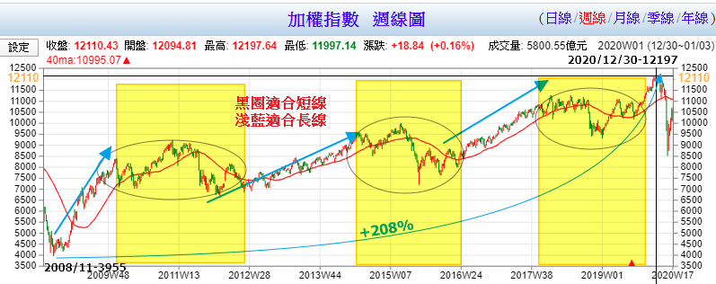
[0034_長線的夢靨]
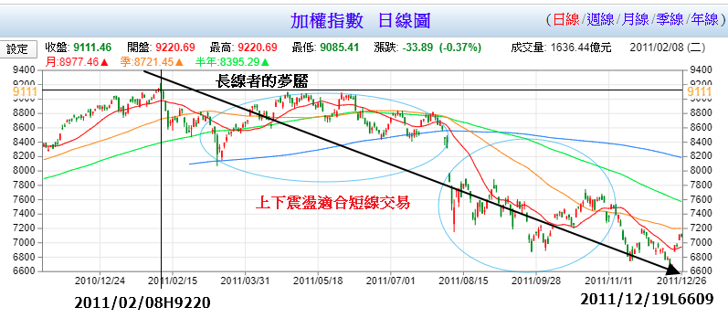
不同均線法的差異
下圖顯示「10週與30週均線交叉法」似乎遠勝於「12週均線法」，但理論上後者可以更快反應盤勢(如下一張圖)
[014_季線與交叉法互補]
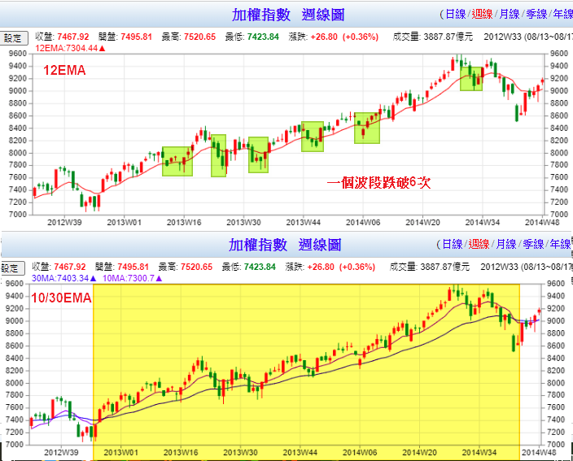
[0035_出場太慢]
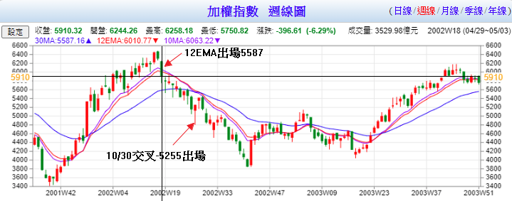
千金難買早知道
只使用單一系統來應付各種環境似乎超乎能力所及。那針對不同的環境，使用不同的系統如何？佳！然而，對於未來，唯一能夠確定的就是：不確定。沒有任何策略適用於任何時空環境，而我們也無從得知用哪一種策略最適合。以一例說明，圖一台股跌到3955，很確定是股災，使用「長抱」策略應該沒錯吧？的確是沒錯。
圖二，台股跌到3411，更確定是股災了，使用「長抱」應該沒錯吧？錯了！。從3411漲到6484之後，又跌回3845，幾乎所有獲利全部又吐回去。2011/9/28時大盤是3411，隔了近兩年，2003/5/2台股也只有4044。也就是說，使用長抱策略者，幾乎兩年沒有任何績效。但如果使用「短線」交易者，大概多空已經作了四趟，使用「波段」交易者，至少也能作到多空各一趟。
圖一、[0036_金融大海嘯]
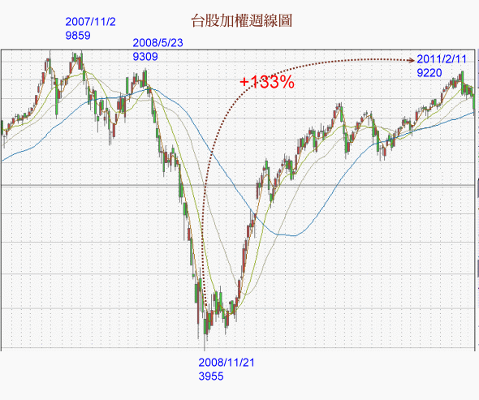
圖二、[0037_網路泡沫]
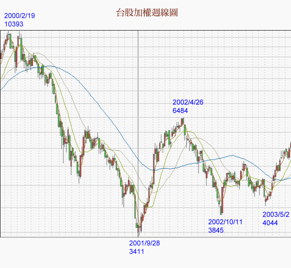
下圖A， B為股市崩跌後的反彈，請問應採用何種投資策略？短線、波段或長線？
[0038_反彈A] 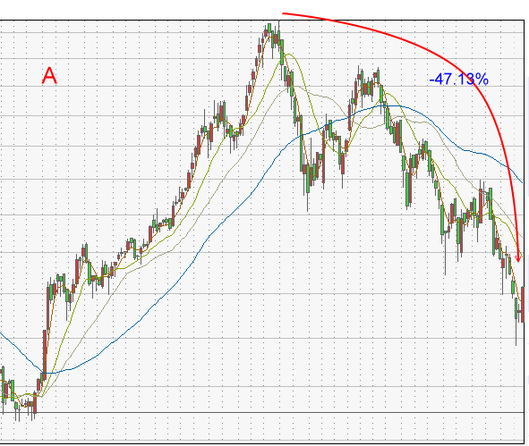
0039_反彈B
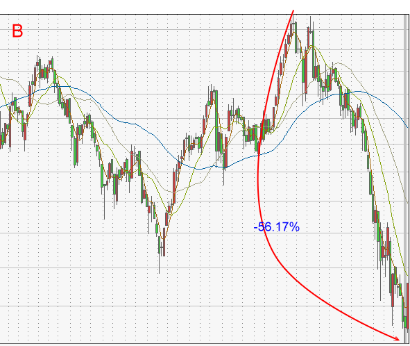
答案：如圖AA，A使用長線最佳，波段次之，使用短線操作，則會錯失5000點的大行情，績效遠遠不如長線。但是如圖BB，使用長線、波段都會賠光光，短線應可小賺到4555-6198約1600點那一段。
[0040_反彈AA]
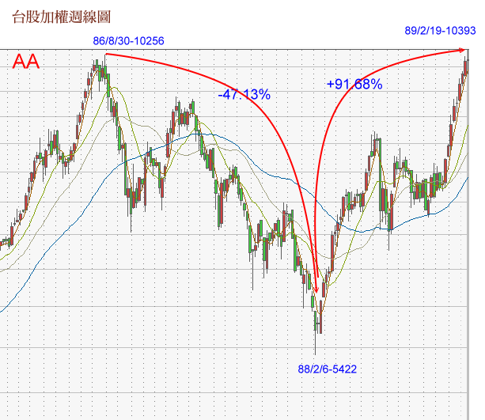
[0041_反彈BB]
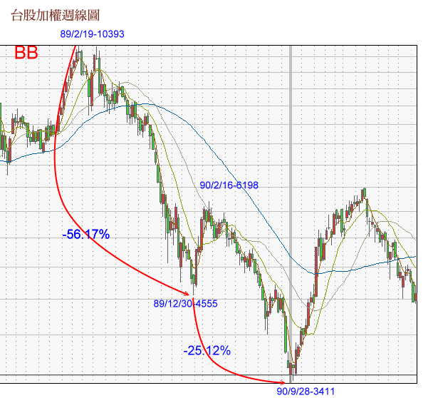
下圖C，D為大漲後的中期回檔，注意兩者都是跌破季線，並在年線之上，請問各使用何種策略為佳？
[0042_回檔C]
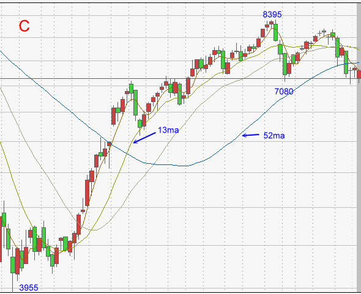
[0043_回檔D]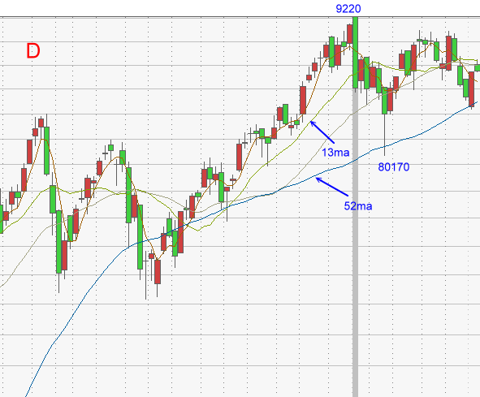
答案：C使用波段會大賺，D使用波段會賠光。
[0044_回檔CC]
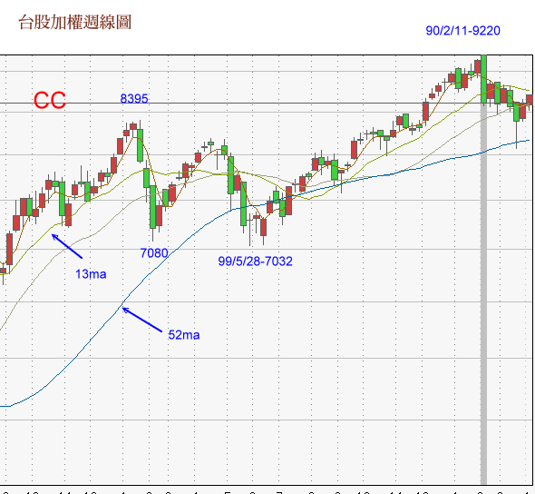
[0045_回檔DD]
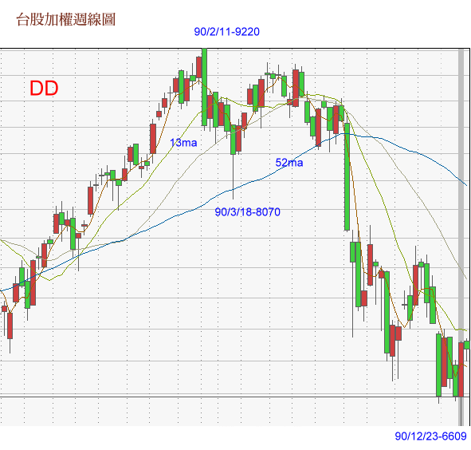
市場多元化
(摘自「海龜投資法則：揭露獲利上億的成功秘訣」/ 克提斯．M．費斯)
提升整體交易穩健性的最有效方式之一，就是同時投資各種市場。如果你交易的市場較多，則比較容易遇到一、兩個較適合你交易系統的市場狀況。若你使用的是順勢操作系統，則投資較多市場，比較容易遇到正在走趨勢的市場。
這表示，你的投資組合中，納入越多市場越好。要選擇能夠帶來新機會的市場，而且彼此之間不要有過高的相關性。例如，有不少短期美國利率期貨產品的走勢根本就是彼此亦步亦趨。這類產品再多，也不會提升你投資組合的多元性。
如果你使用的是不需要密切監督的交易系統，則應該考慮國外市場。國外市場能大大提升多元性，讓你的交易更為穩健、持續。只要是根據收盤資料、做出開盤買進決定的系統，交易全球各市場時，都不會太困難，因為，如果你只考量市場的收盤和開盤價，則時差問題就不那麼重要了。
雖然全球是同步多空的，但差異還是蠻大的，比如使用10/30週交叉法上一波上證才漲21.5%，但NAS漲了74%，幾乎多漲了2.44倍。所以，分散市場還是有必要的。
[0009_多元_NASDAQ]
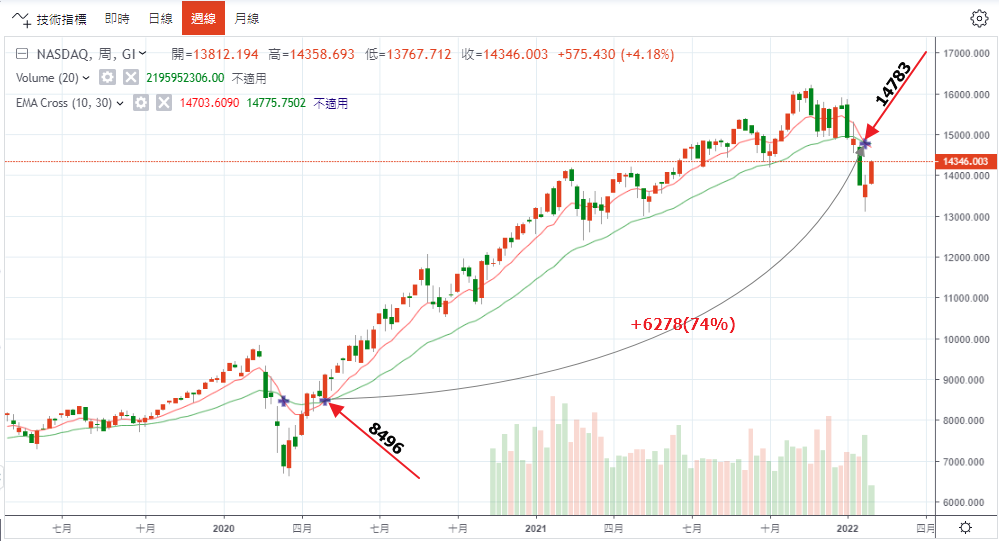
[0010_多元_日經225]
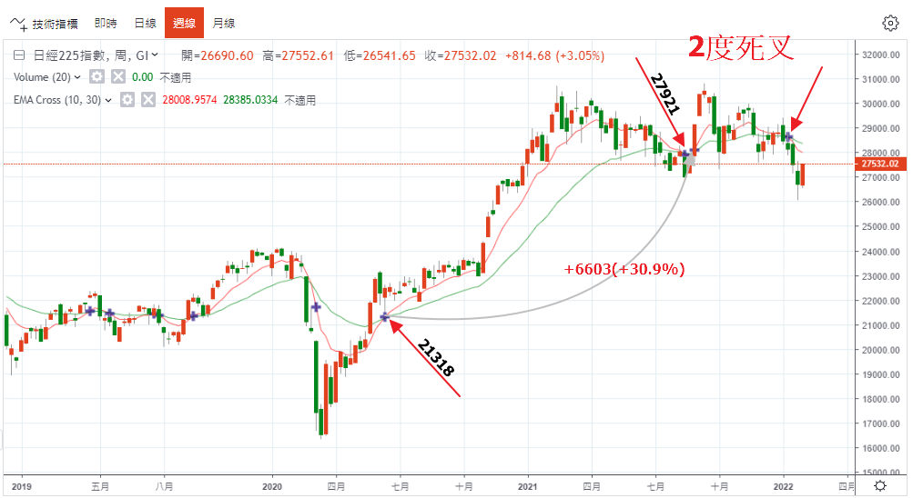
[0011_多元_上證指數]
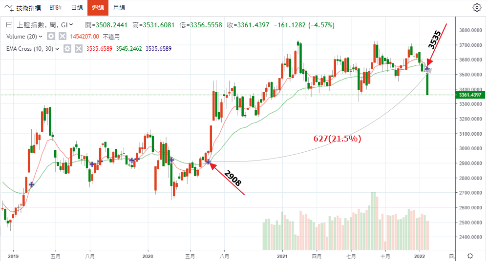
[0012_多元_南韓]
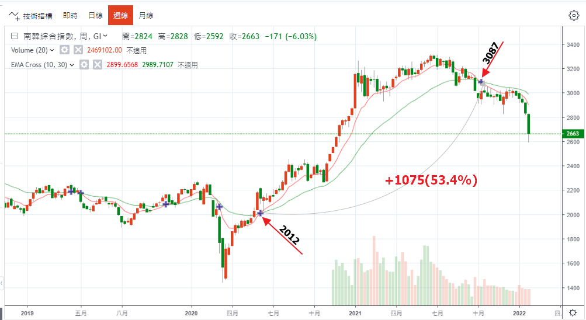
[0013_多元_台灣]
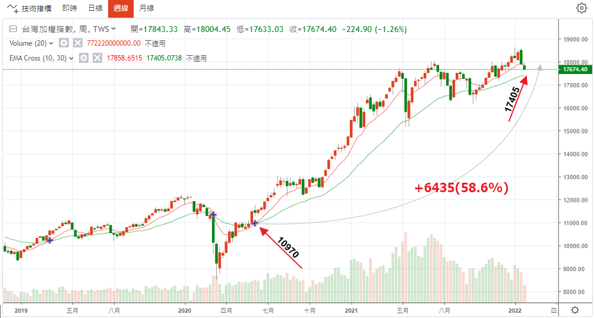
系統多元性
(摘自「海龜投資法則：揭露獲利上億的成功秘訣」/ 克提斯．M．費斯)
除了分散市場之外，你也可以透過分散系統來增加交易計劃的穩健度。同時使用一個以上的系統，能夠讓交易計畫明顯更加穩健，若使用的系統彼此差異性極大，則效果更佳。
以同時使用兩套系統為例。比較好的那一套有38.2%的RAR% 4R 值為1.19;比較差的那一套則有14.5%的RAR%、 4R值為0.41。如果你測試這兩套系統，你會選擇哪一套來交易呢？你是不是會選擇比較好的那一套?這應該是比較符合邏輯的選擇。
然而，這項選擇忽略了兩套系統不相關時，所帶來的多樣性優點。如果系統彼此之間成負相關(也就是說，一套獲利時、另一套虧損)，則優點更大。因此，結合某些系統來使用，能夠帶來極大好處。請看以下說明。
同時使用兩套系統，則RAR%為61.2%、4R 值為5.20不用說，績效要比單用任何一套系統都好多了。
以上提到的兩套系統其實是波林格突破系統的兩個部份。較好的系統用於長線波動通道突破，較差的系統用於短線波動通道突破。不難了解為何將兩系統結合後表現較佳，可是你可能想像不到，結合後的績效將有大幅度的提升。
將用於不同市況的系統結合，也能得到相同效果。例如，將適用於趨勢市場的系統和適用於沒有趨勢時的系統結合，當其中一個系統遭遇連續虧損時，另一套系統可能正在獲利，反之亦然。也許不如你所想樣的如此順利，但你還是可以藉由這類做法來增進你交易計劃的穩健性。
系統多元化的限制和市場多元化一樣，想要同時用許多系統來交易，需要投注較高的資金或管理心力。也因如此，成功的避險基金經理人在運用這項策略時，就要比散戶輕鬆多了。若要充分讓順勢操作系統多元化，則至少需要20萬美元的資金。同時使用四到五種不同系統，則需要100萬美元以上的資金。光是這一點，就足以讓人們決定把資金交給投資各種商品的專業交易人或避險基金，而不會親自交易自己的帳戶。
多元系統的必要性
「想要建立一套穩健的交易計劃，就必須體認到，你無法預測你在未來實際交易中會遇到什麼樣的市場情況。為將這個前提納入考量，穩健交易必須建立穩健系統，因為它們簡單、適應力強，不特別依賴某一市場狀況。成熟穩健的交易計劃會使用許多不同的系統來投資許多不同的市場，而且，和那些使用只適合少數市場的少數系統的計畫比起來，穩健的交易計劃比較能在未來交出沉穩、漂亮的成績單。」(「海龜投資法則：揭露獲利上億的成功秘訣」/ 克提斯．M．費斯)
「多重交易系統的情形也一樣，讓你擁有更多機會。如果這些系統之間彼此不相關的話，好處更大。換言之，永遠有某些系統處於獲利狀況，這有助於減緩帳戶淨值連續耗損。」(「交易‧創造自己的聖盃」 / 凡‧沙普)
讓不同交易系統保有自己的特色
系統化交易的專家們似乎都想要找出一組參數在任何環境下都能表現得好，這可能是沒有必要的「迷思」。也許我們只需要讓某個交易系統，特別適合在某個環境與階段下表現，這樣就可以了。
企圖讓一個交易系統能夠適用於所有環境與階段，也許是不可能的任務，也沒有必要，比如說，「大量強勢股」可能適合在明顯的上升盤勢中，而不適合在區間盤整；相反的「包寧傑底部反轉」或許適合在區間盤整的盤勢而不適合在明顯的上升或下跌的盤勢中。
以ST-BBBRO為例，此系統在A時段顯然是不合適的。不但交易機會很少，使用連續加碼法獲利反而變少。
以下顯示，ST-BBBRO系統在A時段如魚得水，不僅交易機會多，連續加碼也獲得加大部位的乘勝追擊效果。
[0046_BBBRO_A]
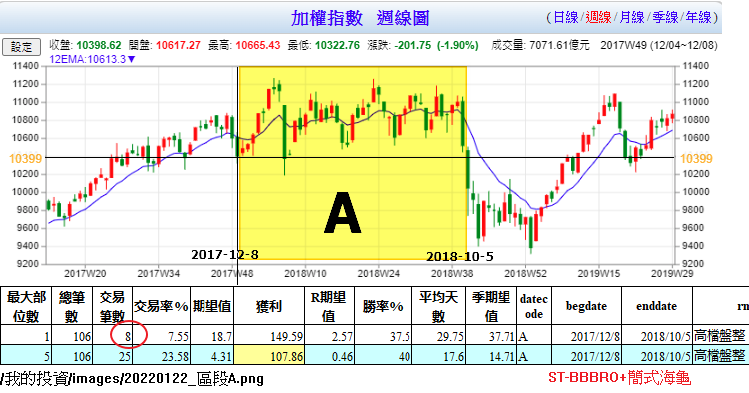
[0047_BBBRO_C]
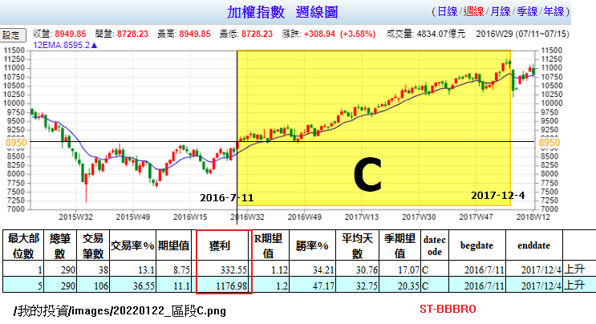
結論：
未來會如何走法？焉知。對於不確定的未來，你只能使用多元投資策略。
凡‧沙普在「交易創造自己的聖盃」中說道：「...同時採用不相關的交易系統(每種系統各自採用其適當的部位大小模型)，通常也有助於提昇績效，舉例來說，我們採用一套長期順勢系統，如果再配合運用一套適用於橫向走勢的短期系統，整體績效應該會改善，因為短期系統可以在橫向走勢內賺錢，藉以彌補長期順式系統在這種市況下通常會發生的損失，說不定還有賺錢的機會。...」
但是，採用多個系統並非要你無知與愚蠢，比如說，在萬點高檔，價值投資就免了吧！或在股災發生後的低檔，放空就免了吧！
多元投資有其必要，但仍宜謹慎避免不必要與愚蠢的分散。
上圖ABCD給我們的啟示是，不要摸頭或摸底，在情勢不明的時候宜以短線應對，只有等到趨勢轉為多頭，如站上200日線且200日線向上，此時才投入長線資金，但如果又轉為空頭，長線資金務必立即減碼（如下圖)。又問，為何你不全部使用短線較為單純？因為短線風險較小，但賺不多(差很大)。